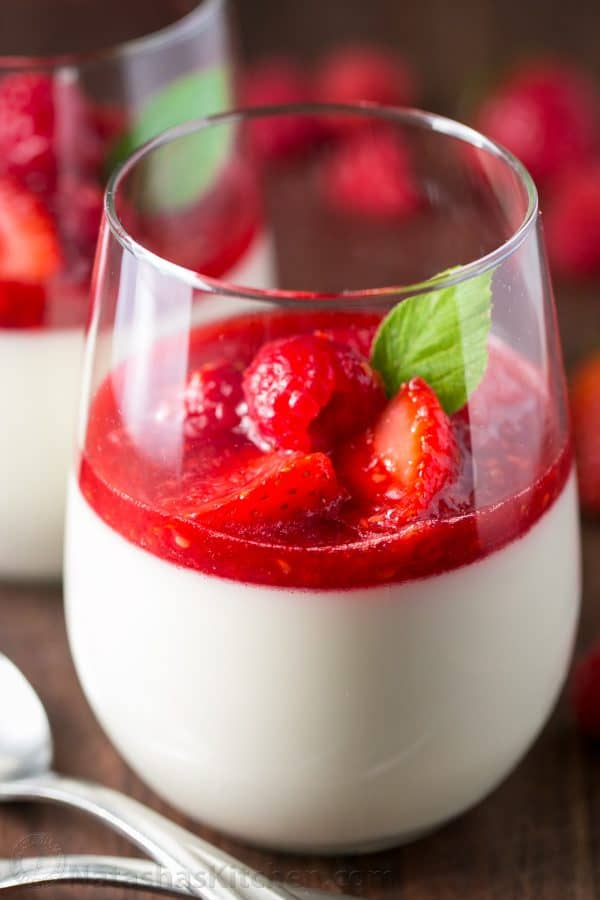

Panna Cotta

Panna Cotta is an Italian dessert that looks and tastes fancy but is so quick and easy to make! The fresh berry
sauce gives every creamy spoonful the perfect balance of sweet and tangy.
Ingredients
- 1 cup whole milk
- 2 1/2 tsp unflavored gelatin, (1 packet Knox gelatin)
- 2 cups heavy whipping cream
- 1/2 cup + 1 Tbsp granulated sugar
- pinch salt
- 1 tsp vanilla extract
- 1 cup sour cream
Steps
- Off the heat, place 1 cup milk in a medium sauce pan and sprinkle the top with 1 packet gelatin. Let stand
3-5 min or until gelatin is softened. Place pan over medium/low heat and stir until gelatin dissolves and
mixture is steaming, about 4-5 min (do not boil).
- Add 2 cups heavy whipping cream, 1/2 cup + 1 Tbsp sugar, 1 tsp vanilla and a pinch of salt. Continue
stirring about 5 min until sugar is fully dissolved and mixture is steaming (do not boil). Remove from heat
and let cool 5 minutes.
- Place sour cream in a medium bowl with a pouring lip. Whisking constantly, gradually add warm cream. Once
the mixture is completely smooth, divide it into 6 wine glasses or 8 ramekins. Refrigerate until fully set;
4 to 6 hours.